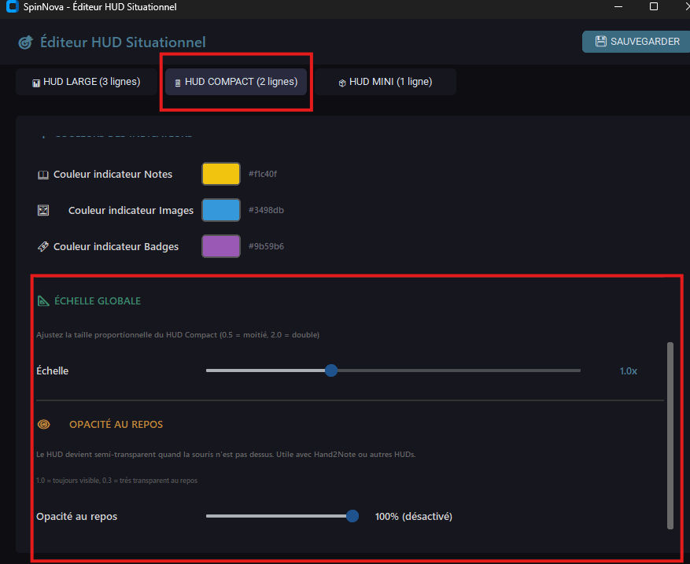

Le HUD Intelligent
Une fois la partie lancée, SpinNova déploie sa puissance directement sur vos tables iPoker.

- Ligne 1 (Header) : Pseudo + Position + Indicateurs
- Ligne 2 (Limp Pot) : Badges pots limpés (Pre & Post)
- Ligne 3 (Open Pot) : Badges pots relancés (Pre & Post)
Scénario idéal : Spin & Go (3-Way) quand on veut un maximum d'info.

- Ligne 1 : Pseudo + Position + Indicateurs
- Ligne 2 : Tous les badges mélangés, triés par importance
Scénario idéal : Heads-Up intensif ou tables encombrées.

- Unique Ligne : Pseudo (5 lettres) + Mode (HU/3W) + Badges
- Halo Visuel : Bordure lumineuse indiquant le profil
Scénario idéal : Mass Grinding (12+ tables) où chaque pixel compte.
🪄 Le "Magic Switch" : L'Adaptabilité Totale
Un Clic, Une Métamorphose. Un petit bouton discret sur le HUD vous permet de cycler instantanément entre les modes Large, Compact et Mini.
Scénario de rêve : Commencez en Mode Mini sur 12 tables. Vous touchez un x100 ? Clic. Passez en Mode Large pour ce tournoi spécifique. C'est ça, la puissance SpinNova.
⚙️ Réglages Avancés du HUD

📐 Échelle Globale
Ajustez la taille du HUD de 0.5x (moitié) à 2.0x (double). Parfait pour les
écrans haute résolution.
👁️ Opacité au Repos
Le HUD devient semi-transparent quand votre souris n'est pas dessus. Idéal si vous utilisez
plusieurs HUDs (SpinNova + Hand2Note...).